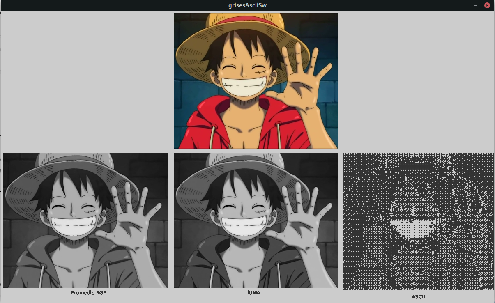
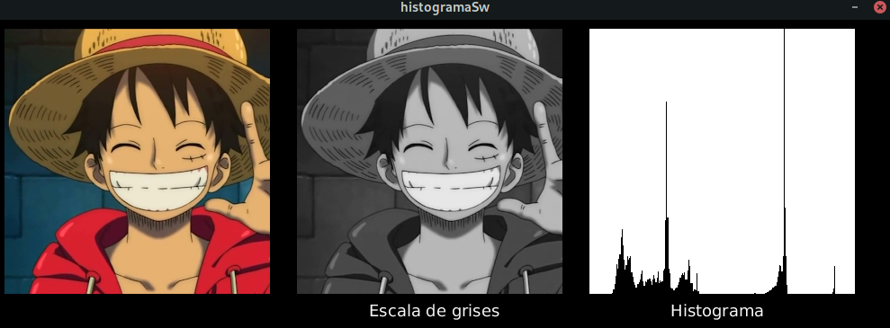
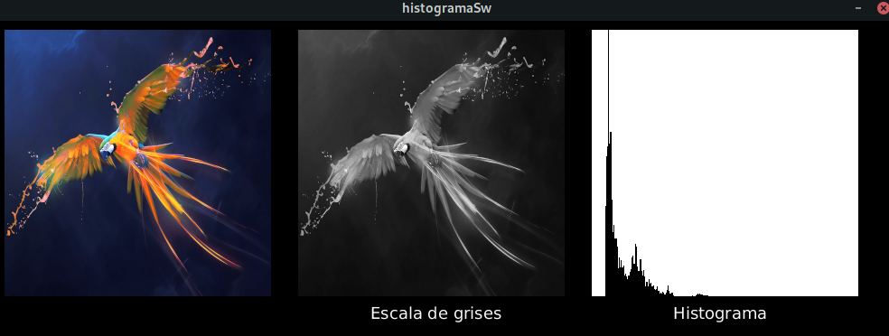

Se recorre la imagen pixel a pixel tomando el promedio de los 3 colores RGB del pixel y se reemplaza el valor por el promedio obtenido obteniendo el resultado final una vez promediados todos los pixeles, en un determinado valor de gris. Para convertir la imagen en ascii, se define un array de simbolos de tamaño 256 que nos van a servir como insumo para la imagen resultado, como segundo paso recorremos la imagen, con un paso determinado por la variable resolución que hemos definido de acuerdo si queremos simbolos mas grandes o pequeños para una textura más fina, para cada iteración obtenemos el valor del color con el fin de obtener su valor de brillo, y le asociamos un caracter definido en el array de simbolos.
Se realiza exactamente el mismo procedimiento anterior, pero en vez de sacar un promedio del RGB usamos la siguiente fórmula que toma cada componente del RGB y lo multiplica por un factor: color_gray = 0.2126R + 007152G + 0.0722B
Para esta parte se emplea shaders para hacer el procesamiento a escala de grises por hardware
Para esta parte del taller se usan tres canvas(imagen original, imagen escala de grises e histograma). Se almacenan las frecuencias de los diferentes valores de brillo de la imagen en escala de grises, tomando en cuenta que cada canal de color tiene 256 niveles de intensidad posibles, cad apunto representado por un valor de brillo en un rango desde 0(negros) hasta 255(blancos) y valores intermedios los diferentes valores de gris y luego se gráfica estas frecuencias mostrando información sobre el brillo y contraste de la imagen.
